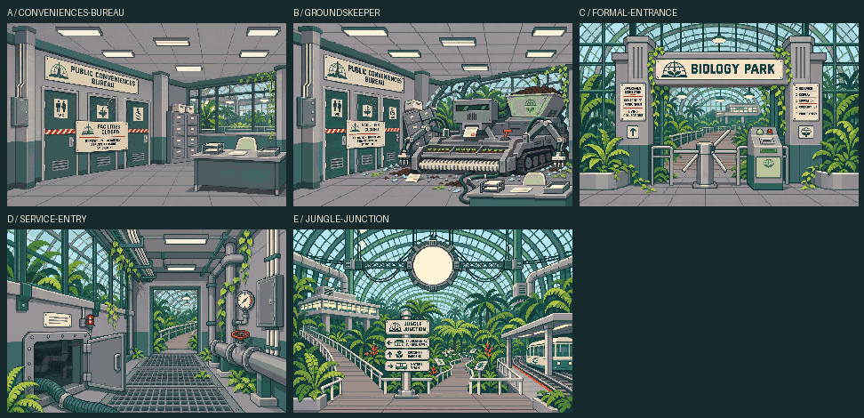
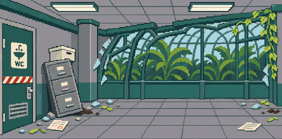
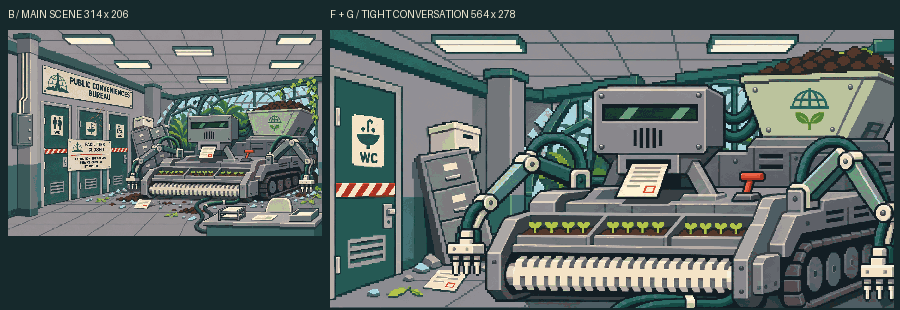
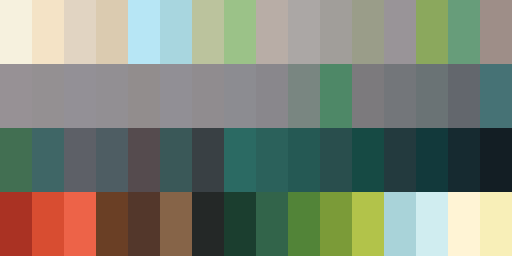

One Exposition, increasing growth.

Main scenes are opaque 314×206 PNGs. The 4× exports are exactly 1256×824. Short signs and pictograms support recognition; story text remains the authority for official wording.

The Groundskeeper, closer.
A tighter office invasion viewpoint. The independent machine foreground can be replaced or animated over its matching opaque background.


Scene / portrait comparison
Compare the inspection slit, speaker grille, feeder, seedlings, soil hopper, and hoses. The conversation camera retains the office-side viewpoint and moves closer to the machine.

Composite PNG · nativeComposite PNG · 4×Artwork continuity review


Direction and evidence
Cool institutional steel and teal continue the Exposition’s technology. Botanical greens take more space as the route reaches the Park. Concrete, glazing, enamel panels, analog equipment, and cream official paper connect the locations.


Exact generation prompts
A · BureauB · GroundskeeperC · Formal entranceD · Service entryE · JunctionF · BackgroundG · Foreground
The raw, unmodified built-in image generation outputs are retained in generation-source/.
Read QA data in this gallery
Open qa.json above, or serve this private folder on localhost to load the data here.